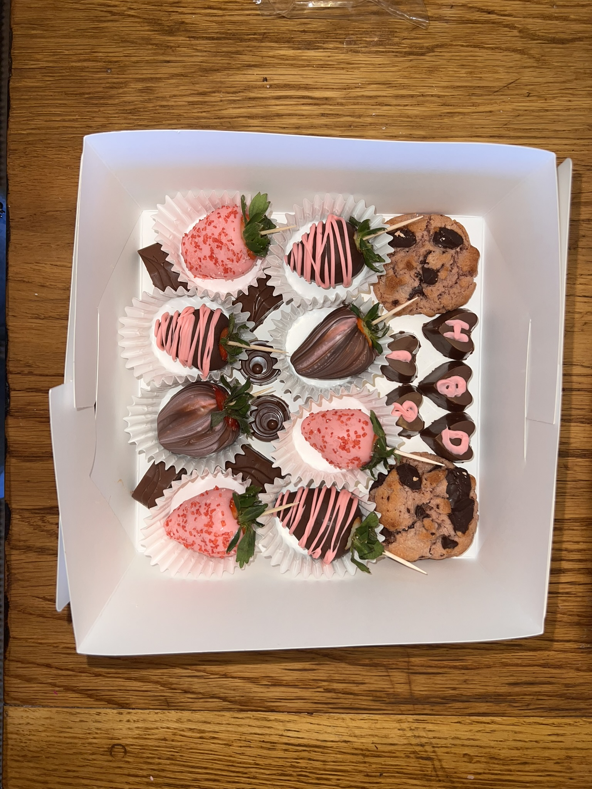
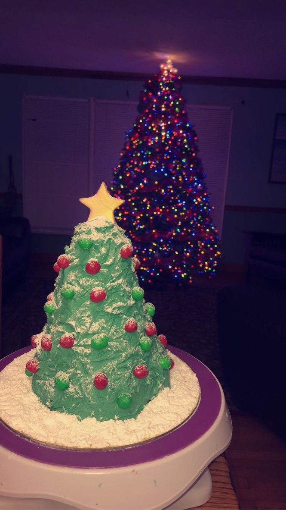

About me
HUMANITY, CLARITY, VISUAL ENGAGEMENT
As a student at Northwestern University studying journalism,
data science and design, I bring a range of
skills to the table. I also have diverse hobbies, including (but not limited to)
food, running, college basketball and figure skating. But to make a long story
short, I’m a person who loves understanding people.
This is the driving force behind all of my work. Whether it means simplifying
complex info or building a user-centered design, my goal is always to meet people
where they are. My skillset allows me to blend thoughtful interviews and research
with data analysis and intentional visuals — making work that is clear, human and
a pleasure to experience.
I'm especially drawn to data and visual journalism, as well as digital media
design. If that interests you, please reach out!
A glimpse at my fun:



